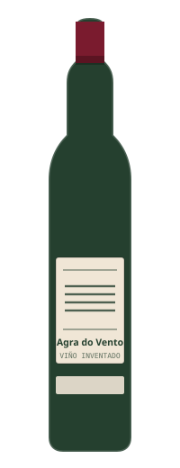
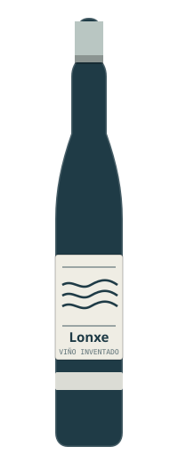
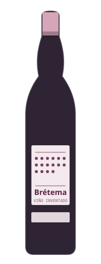
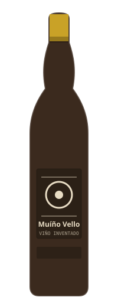
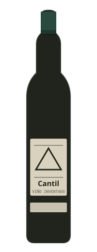
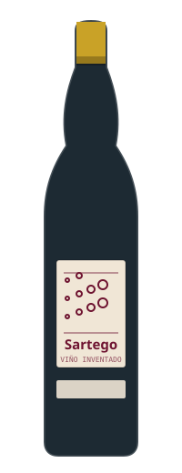
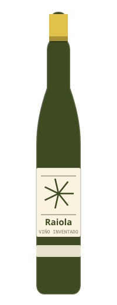
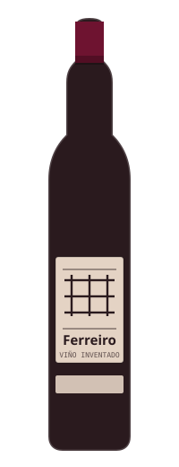

Ferrol · enoteca y catas · desde 2016
Primero lo que hay dentro
Aquí las botellas están tapadas hasta que las pruebas. No porque seamos raros, sino porque la etiqueta condiciona: cuando sabes lo que cuesta, ya no estás catando el vino, estás catando el precio.
Venta solo a mayores de 18 años. El consumo de alcohol tiene riesgos para la salud: esta web no anima a beber.
-

Tinto · 2021
-

Blanco · 2023
-

Rosado · 2022
01 — La selección
Ocho botellas y ninguna de compromiso
No tenemos trescientas referencias: tenemos ocho que podemos explicar de memoria. Cada una se puede probar por copas los jueves de cata. Pasa por encima —o toca— para levantar la funda.
-
Agra do Vento
Tinto · mencía · 2021 · Ribeira Sacra
Ligero, de los que se beben fríos en verano sin pedir permiso a nadie.
14,50 €
-
Lonxe
Blanco · albariño · 2023 · Salnés
Salino y tirante. Con berberechos no falla y con un queso curado tampoco.
16,00 €
-

Muíño Vello
Tinto · viñas viejas · 2019 · Ribeiro
El más serio de la casa. Se abre una hora antes y cambia entero.
24,00 €
-
Brétema
Rosado · de una noche · 2022 · Valdeorras
Rosado de verdad, no de color. Es el que más discusiones genera en las catas.
13,00 €
-

Cantil
Tinto · brancellao · 2020 · Rías Baixas
Fino y con un punto herbáceo. Va bien con pescado, aunque suene raro.
19,50 €
-

Sartego
Espumoso · método tradicional · 30 meses
Burbuja fina y poco azúcar. El que más se lleva la gente cuando hay que celebrar algo.
22,00 €
-

Raiola
Blanco · treixadura · 2022 · Ribeiro
Con seis meses en depósito. Más ancho que el albariño y menos ruidoso.
15,00 €
-

Ferreiro
Tinto · sousón · 2018 · Monterrei
Oscuro y con acidez de las que despiertan. Para carne o para aguantar una conversación larga.
27,00 €
Los ocho vinos, sus bodegas y sus añadas están inventados para esta demostración: no existen. Las botellas están dibujadas en SVG y llevan «viño inventado» impreso en la propia etiqueta, para que no haya duda ni en una captura de pantalla.
02 — Cómo se cata
Cuatro pasos y ningún misterio
-
01
Vista
Se inclina la copa sobre algo blanco y se mira el borde. Ahí se ve la edad: los tintos jóvenes tiran a morado y los viejos, a teja.
-
02
Nariz
Primero quieto y después moviendo la copa. No hace falta acertar la fruta: con saber si huele a fruta, a madera o a establo, ya vas servido.
-
03
Boca
Un sorbo corto. Se busca si raspa, si pesa, si seca la lengua y cuánto dura después de tragar. Eso último es lo que separa a un vino bueno de uno correcto.
-
04
La etiqueta
Y solo entonces se levanta la funda. A veces el vino de nueve euros gana al de veinticinco, y esa es exactamente la gracia.
03 — Catas
Los jueves, a las ocho
Doce plazas, seis vinos tapados y dos horas. Se sale sabiendo un poco más y habiendo cenado algo, porque se acompaña con conservas y queso.
— Calculando la próxima cata…
- —Cargando el calendario…
Lo que hay que saber
- 22 € por persona. Se paga al apuntarse, en la tienda o por teléfono.
- Solo mayores de 18 años, sin excepción y sin discusión.
- Si te apuntas y no puedes venir, avisa: hay lista de espera de verdad.
- Hay agua, pan y escupidera. Catar no es beberse seis copas.
- Si vienes en coche, cata sin tragar o pídele a alguien que conduzca.
Calendario calculado en vivo para la demostración: son los jueves reales que vienen, con temas inventados.
04 — La caja
Tres botellas al mes, elegidas a mano
Sin permanencia y sin algoritmo: las elegimos nosotros después de probarlas, y si un mes no nos convence nada, te lo decimos y no mandamos caja.
-
Caja corta
39 €/mes
- Tres botellas de entre 12 y 16 €
- Ficha de cada vino, escrita a mano
- Recogida en tienda
-
Caja larga
62 €/mes
- Tres botellas de entre 18 y 28 €
- Una de ellas siempre fuera de lo habitual
- Recogida en tienda o envío a Ferrol y alrededores
- Una cata de los jueves incluida cada trimestre
-
Caja a ciegas
45 €/mes
- Tres botellas con la funda puesta
- Las fichas van en un sobre cerrado
- Se abre el sobre cuando ya has decidido cuál te gusta
Precios inventados para esta demostración. Venta solo a mayores de 18 años.
05 — Visítanos
Rúa da Barrica, 4
Comprobando el horario…
Rúa da Barrica, 4 · bajo15402 Ferrol
981 00 00 46
hola@trasfega.example
- Martes a viernes
- 11:00–14:00 · 17:30–21:00
- Sábado
- 11:00–15:00 · 18:00–22:00
- Domingo y lunes
- Cerrado
Entrada a pie de calle, con la mesa de cata al fondo. Los jueves de cata la tienda cierra a las 20:00 y se abre solo para quien esté apuntado.
El mapa se carga solo si lo pides: hasta entonces esta web no llama a ningún servidor de terceros.